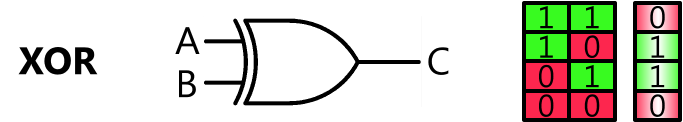

Logic Gate Lesson
A logic gate is easiest understood when put in elecritcal terms. They are an elementary building block of an electrical circuit.
Gate INPUTS are driven by volatges having two values, e.g. 0V and 5V representing logic 0 and logic 1 respectively.
Gate OUTPUTS can be one of these two values, 0V or 5V representing logic 0 and logic 1 respectively.
The output of a logic gate is determined by the inputs going into the gate.
In Gate Grabber, all the logic gates have 2 inputs.
Truth tables are used to describe the behavior of each type of gate.
In each truth table, there are two input columns next to each other and a seperate column for the output.
The AND gate is an electronic circuit that gives a high output (1) only if all its inputs are high (1).
The OR gate is an electronic circuit that gives a high output (1) if one or more of its inputs are high (1).
This is a NOT-AND gate which is equal to an AND gate but the output is inverted. The outputs of all NAND gates are high (1) if any of the inputs are low (0). The symbol is an AND gate with a small circle on the output. The small circle represents inversion.
This is a NOT-OR gate which is equal to an OR gate but the output is inverted. The outputs of all NOR gates are low (0) if any of the inputs are high (1). The symbol is an OR gate with a small circle on the output. The small circle represents inversion.

The 'Exclusive-OR' gate is a circuit which will give a high (1) output if either, but not both, of its two inputs are high (1).

The 'Exclusive-NOR' gate circuit does the opposite to the EOR gate. It will give a low (0) output if either, but not both, of its two inputs are high (1).